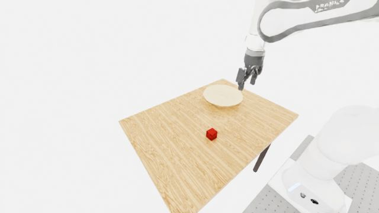
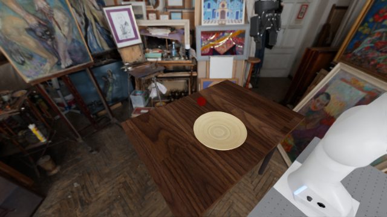
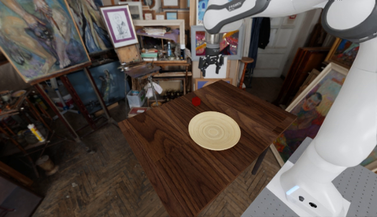
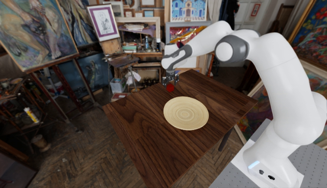
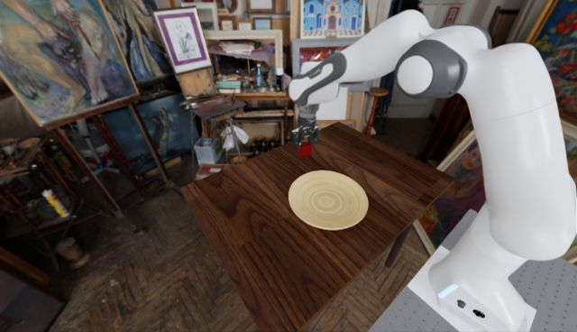
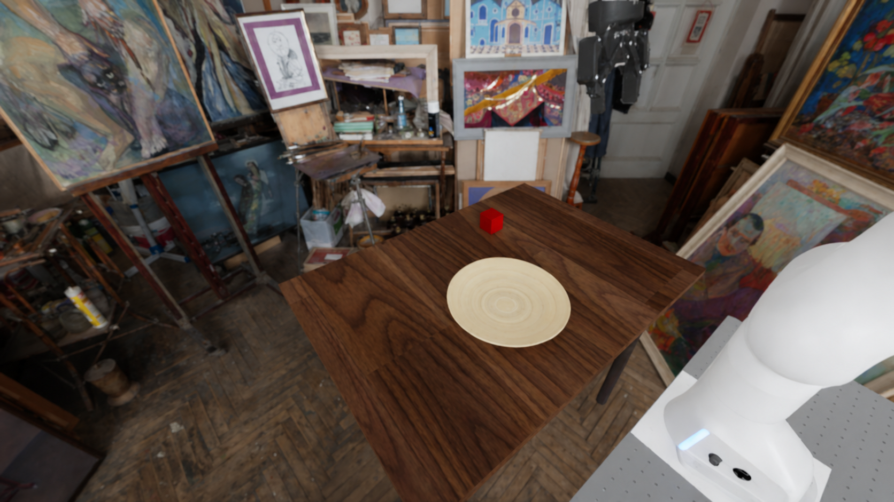
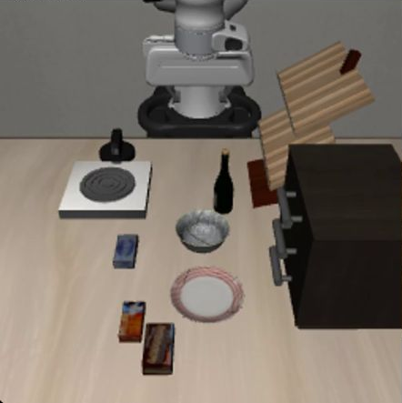
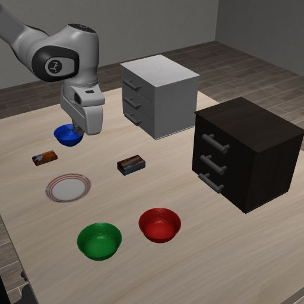
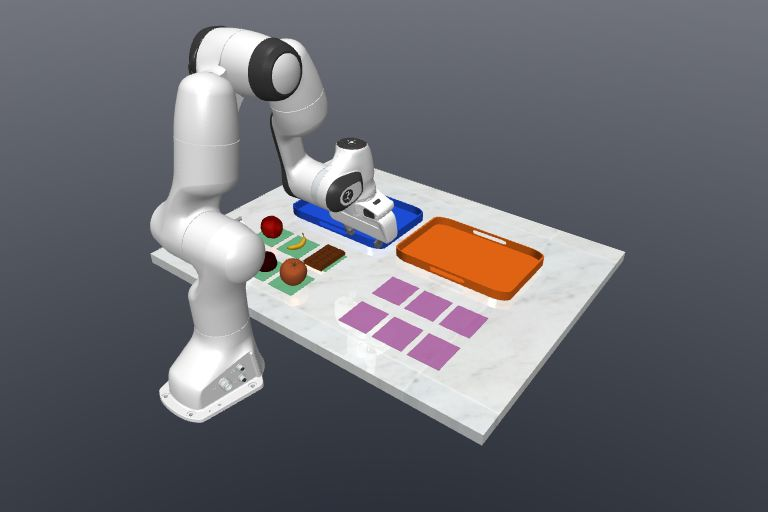

GEMA-Astra
Text and image references guide an agentic controller.
GEMA interprets historical evidence as task-specific textual and visual references for robot control under partial observability.

02 / GENERATED REFERENCE“Place it 10 cm to the right
of its original position.”
Our starting point is a cognitive perspective on human memory: remembering is a constructive process.
Constructive accounts of episodic memory suggest that people can recombine elements of past experience to imagine possible future events. This motivates GEMA’s central idea: use retained experience to construct task-specific guidance for future action.
For a robot acting under partial observability, retrieving the past alone may not specify what to do next. Placing a cube 10 cm to the right of its original location, for example, requires a target that was never observed.
Inspired by this account of human cognition, GEMA separates historical evidence from its interpretation for control. A pretrained multimodal language model turns that evidence into textual and visual references; a downstream controller executes them, while a task agent assesses observed outcomes.
Retained experience and the current request meet in generative memory. A task agent coordinates reference generation, execution, and progress assessment.




Place the cube 10 cm to the robot’s right of its original position.
Robot-base frame · world −Y OpenAI
OpenAI
Text and image references guide an agentic controller.
FL2V visual-goal conditioning, with text through cross-attention.
Memory-derived text enters the policy’s instruction prompt.
Controlled episodes isolate specific memory demands. Continuous query streams test whether that memory remains useful as the scene evolves.
9 tasks · 100 episodes per task
Transform and Resume test remembered positions and drawer associations. Seven MIKASA variants test novelty comparison, sequence reproduction, and cue retention.
Persistent scenes · No resets between queries

01 / LIBERORemember event order and resume interrupted tasks.
Example query“Return the butter from the plate to the drawer it came from.”

02 / LIBERORecover historical locations and object–drawer associations.
Example query“Move the blue bowl to the drawer the red bowl just vacated.”

03 / ROBOCASARetain, update, and restore historical order contents.
Example query“Restore order A to its contents after query 2, keeping order B unchanged.”
Task success and query survival capture complementary aspects of memory-dependent control.
Unweighted mean across nine tasks (%)
100 evaluation episodes per task. DreamZero is the controller-only baseline.
| Task | MemoryVLA | Long-DP | GMP | DreamZero | GEMA-DreamZero |
|---|
Query survival S(N): the percentage of all started rollouts that complete at least N queries.
Loading query survival curves…
Protocol10 rollouts per benchmark for the agentic controller; 50 each for DreamZero and Pi05, per memory condition.
MetricS(N) = rollouts completing at least N queries ÷ all started rollouts × 100%.
ScopeThese curves report query survival, a different metric from Task-Based episode success.